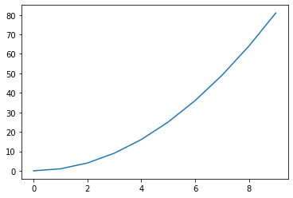

Assert¶
[1]:
assert 1 == 1
[2]:
try:
assert 1 == 2
except Exception as e:
print(type(e), e)
<class 'AssertionError'>
Object Oriented Programming¶
[3]:
i = 666
[4]:
print(type(i))
<class 'int'>
[5]:
s = 'mississippi'
[6]:
print(type(s))
<class 'str'>
[7]:
s.count('ss')
[7]:
2
[8]:
s.find('ss')
[8]:
2
[9]:
str_mit_666 = str(666)
[10]:
print(str_mit_666)
666
The id() function¶
[11]:
l1 = [1, 2, 3]
l2 = l1
[12]:
l1
[12]:
[1, 2, 3]
[13]:
l2
[13]:
[1, 2, 3]
[14]:
l1.append(4)
[15]:
l1
[15]:
[1, 2, 3, 4]
[16]:
l2
[16]:
[1, 2, 3, 4]
[17]:
id(l1)
[17]:
140240419976192
[18]:
id(l2)
[18]:
140240419976192
[19]:
id(l1) == id(l2)
[19]:
True
[20]:
l1 is l2
[20]:
True
class Person¶
[21]:
class Person:
def __init__(self, firstname, lastname):
print('Person.__init__(): ', id(self))
self.firstname = firstname
self.lastname = lastname
[22]:
joerg = Person('Joerg', 'Faschingbauer')
Person.__init__(): 140240419593568
[23]:
print('id von joerg:', id(joerg))
id von joerg: 140240419593568
[24]:
print(type(joerg))
<class '__main__.Person'>
[25]:
joerg.firstname
[25]:
'Joerg'
[26]:
joerg.lastname
[26]:
'Faschingbauer'
Functions That Do Not Return Anything¶
[27]:
def f():
pass
[28]:
wert = f()
[29]:
print(wert)
None
Classes, Attributes, und so (Dictionaries Everywhere!)¶
class AClass { public: int i; };
[30]:
class Empty:
pass
[31]:
e = Empty()
[32]:
type(e)
[32]:
__main__.Empty
[33]:
class AlmostEmpty:
def do_something(self, msg):
self.beenthere = msg
[34]:
a = AlmostEmpty()
[35]:
try:
a.beenthere
except Exception as e:
print(type(e), e)
<class 'AttributeError'> 'AlmostEmpty' object has no attribute 'beenthere'
[36]:
hasattr(a, 'beenthere')
[36]:
False
[37]:
a.do_something('yay!!!')
[38]:
hasattr(a, 'beenthere')
[38]:
True
[39]:
a.beenthere
[39]:
'yay!!!'
[40]:
a.__dict__
[40]:
{'beenthere': 'yay!!!'}
[41]:
a.__dict__['kuckucksei'] = 'chirp'
[42]:
a.kuckucksei
[42]:
'chirp'
[43]:
type(a)
[43]:
__main__.AlmostEmpty
[44]:
isinstance(a, AlmostEmpty)
[44]:
True
[45]:
a.do_something('yay!!!')
[46]:
def some_bullshit(o, msg):
o.bad_thing_happened = 'JESSAS '+msg+'!!!!!!!'
print('some_bullshit called')
[47]:
AlmostEmpty.do_some_bullshit = some_bullshit
[48]:
a.__class__
[48]:
__main__.AlmostEmpty
[49]:
AlmostEmpty.__dict__
[49]:
mappingproxy({'__module__': '__main__',
'do_something': <function __main__.AlmostEmpty.do_something(self, msg)>,
'__dict__': <attribute '__dict__' of 'AlmostEmpty' objects>,
'__weakref__': <attribute '__weakref__' of 'AlmostEmpty' objects>,
'__doc__': None,
'do_some_bullshit': <function __main__.some_bullshit(o, msg)>})
[50]:
a.do_some_bullshit('boah!')
some_bullshit called
[51]:
a.__dict__
[51]:
{'beenthere': 'yay!!!',
'kuckucksei': 'chirp',
'bad_thing_happened': 'JESSAS boah!!!!!!!!'}
[52]:
a.__class__
[52]:
__main__.AlmostEmpty
[53]:
a.__class__.__dict__
[53]:
mappingproxy({'__module__': '__main__',
'do_something': <function __main__.AlmostEmpty.do_something(self, msg)>,
'__dict__': <attribute '__dict__' of 'AlmostEmpty' objects>,
'__weakref__': <attribute '__weakref__' of 'AlmostEmpty' objects>,
'__doc__': None,
'do_some_bullshit': <function __main__.some_bullshit(o, msg)>})
[54]:
a.do_something('hallo')
exec()¶
[55]:
for i in range(3): print(i)
0
1
2
[56]:
python_code = 'for i in range(3): print(i)'
[57]:
type(python_code)
[57]:
str
[58]:
exec(python_code)
0
1
2
[59]:
python_code = 'a_global_variable = 666'
exec(python_code)
[60]:
a_global_variable
[60]:
666
[61]:
del a_global_variable
[62]:
context = {}
exec(python_code, context)
[63]:
context['a_global_variable']
[63]:
666
Globale, lokale, und Class Variablen¶
[64]:
globale_variable = 666
def f():
globale_variable = 42
[65]:
f()
[66]:
globale_variable
[66]:
666
[67]:
globale_variable = 666
def f():
global globale_variable
globale_variable = 42
[68]:
f()
globale_variable
[68]:
42
Mutable vs. Immutable¶
[69]:
a = 42
b = a
[70]:
id(a)
[70]:
140240513015376
[71]:
id(b)
[71]:
140240513015376
[72]:
a is b
[72]:
True
[73]:
b = 7
[74]:
a
[74]:
42
[75]:
id(a)
[75]:
140240513015376
[76]:
id(b)
[76]:
140240513014256
[77]:
a = 7
id(a)
[77]:
140240513014256
[78]:
a = 10**10
id(a)
[78]:
140240419270768
[79]:
b = 10**10
id(b)
[79]:
140240419271792
[80]:
b == a
[80]:
True
[81]:
b is a
[81]:
False
[82]:
b = a
id(b)
[82]:
140240419270768
[83]:
b is a
[83]:
True
[84]:
a += 1
[85]:
a is b
[85]:
False
[86]:
class StoresAnIntegerAndModifiesIt:
def __init__(self, i):
self.the_int = i
def increment(self):
self.the_int += 1
[87]:
my_int = 666
saiami = StoresAnIntegerAndModifiesIt(my_int)
[88]:
my_int is saiami.the_int
[88]:
True
[89]:
saiami.increment()
[90]:
my_int
[90]:
666
[91]:
saiami.the_int
[91]:
667
[92]:
class StoresAListAndModifiesIt:
def __init__(self, l):
self.the_list = l
def append_something(self, something):
self.the_list.append(something)
[93]:
my_list = ['hallo', 'suesser']
salami = StoresAListAndModifiesIt(my_list)
[94]:
my_list is salami.the_list
[94]:
True
[95]:
salami.append_something('du!')
[96]:
my_list
[96]:
['hallo', 'suesser', 'du!']
[97]:
my_list is salami.the_list
[97]:
True
[98]:
salami.the_list
[98]:
['hallo', 'suesser', 'du!']
[99]:
l1 = [1, ['a', 'b'], 2]
l2 = l1[:]
[100]:
l1 is l2
[100]:
False
[101]:
l2[1].append('c')
[102]:
l1 is l2
[102]:
False
[103]:
l1[1] is l2[1]
[103]:
True
[104]:
l1
[104]:
[1, ['a', 'b', 'c'], 2]
[105]:
del l1
del l2
Exceptions¶
[134]:
def compute_square(param):
'''Compute the square of param and return it
(only 666 is an exception which refuses a square to be computed)'''
if param == 666:
e = ValueError('Geht net: '+str(param))
raise e
else:
return param**2
[113]:
result = compute_square(5)
print(result)
25
Catch exception by type only:
[129]:
try:
result = compute_square(666)
except Exception:
print('jessas, da ist was nicht gegangen')
jessas, da ist was nicht gegangen
Catch Exception by type, plus the exception object
[135]:
try:
result = compute_square(666)
except Exception as e:
print('jessas, da ist was nicht gegangen:', e)
jessas, da ist was nicht gegangen: Geht net: 666
[137]:
try:
result = compute_square(666)
except ValueError as e:
print('jessas, da ist was nicht gegangen:', e)
jessas, da ist was nicht gegangen: Geht net: 666
Defining my Own Exceptions¶
SatanicError is-a Exception
[140]:
class SatanicError(Exception):
pass
[141]:
def compute_square(param):
'''Compute the square of param and return it
(only 666 is an exception which refuses a square to be computed)'''
if param == 666:
e = SatanicError('Geht net: '+str(param))
raise e
else:
return param**2
[143]:
try:
result = compute_square(666)
except SatanicError as e:
print('jesses:', e)
jesses: Geht net: 666
Dictionary Lookup, keys() etc.¶
[144]:
db = {
'1037190666': ('Joerg', 'Faschingbauer'),
'1234250497': ('Caro', 'Faschingbauer'),
}
[145]:
svnr = '1037190666'
The following is sequential search:
[146]:
if svnr in db.keys():
print('ja')
else:
print('nein')
ja
[148]:
db.keys()
[148]:
dict_keys(['1037190666', '1234250497'])
… much like this … (the in operator on a list does its job, but is suboptimal)
[149]:
10 in [1,2,3,4,5,6,7,8,9,10]
[149]:
True
Better ask the dictionary, directly:
[150]:
svnr in db
[150]:
True
This is just as fast:
[151]:
if db.get(svnr) is None:
print('nein')
else:
print('ja')
ja
Integers, Strings, und so¶
[153]:
s = '1037190666'
type(s)
[153]:
str
[155]:
int(s)
[155]:
1037190666
[158]:
class InvalidSVNR(Exception):
pass
try:
s = 'abc'
try:
int(s)
except ValueError:
raise InvalidSVNR(s+' ist keine SVNR')
except Exception as e:
print(type(e), e)
<class '__main__.InvalidSVNR'> abc ist keine SVNR
Regular Expressions¶
[168]:
line = ' \t 1037190666 | Joerg|Faschingbauer '
[169]:
fields = line.split('|')
fields
[169]:
[' \t 1037190666 ', ' Joerg', 'Faschingbauer ']
[171]:
svnr = fields[0].strip()
firstname = fields[1].strip()
lastname = fields[2].strip()
[172]:
svnr, firstname, lastname
[172]:
('1037190666', 'Joerg', 'Faschingbauer')
Enter regex
[174]:
import re
[178]:
rex_line = re.compile(r'^\s*(\S+)\s*\|\s*(\S+)\s*\|\s*(\S+)\s*$')
[179]:
match = rex_line.search(line)
match
[179]:
<re.Match object; span=(0, 53), match=' \t 1037190666 | Joerg|Faschingbauer >
[180]:
match.group(1)
[180]:
'1037190666'
[182]:
match.group(2)
[182]:
'Joerg'
[183]:
match.group(3)
[183]:
'Faschingbauer'
JSON¶
[184]:
l = [
{'svnr': '1037190666',
'firstname': 'Joerg',
'lastname': 'Faschingbauer'
},
{'svnr': '1234250497',
'firstname': 'Caro',
'lastname': 'Faschingbauer'
}
]
[185]:
l
[185]:
[{'svnr': '1037190666', 'firstname': 'Joerg', 'lastname': 'Faschingbauer'},
{'svnr': '1234250497', 'firstname': 'Caro', 'lastname': 'Faschingbauer'}]
[186]:
import json
[187]:
json_string = json.dumps(l)
[189]:
json_string
[189]:
'[{"svnr": "1037190666", "firstname": "Joerg", "lastname": "Faschingbauer"}, {"svnr": "1234250497", "firstname": "Caro", "lastname": "Faschingbauer"}]'
[190]:
python_l = json.loads(json_string)
python_l
[190]:
[{'svnr': '1037190666', 'firstname': 'Joerg', 'lastname': 'Faschingbauer'},
{'svnr': '1234250497', 'firstname': 'Caro', 'lastname': 'Faschingbauer'}]
matplotlib¶
[191]:
%matplotlib inline
[194]:
import matplotlib.pyplot as plt
[195]:
x = list(range(10))
y = [i**2 for i in x]
[196]:
x
[196]:
[0, 1, 2, 3, 4, 5, 6, 7, 8, 9]
[197]:
y
[197]:
[0, 1, 4, 9, 16, 25, 36, 49, 64, 81]
[198]:
plt.plot(x, y)
[198]:
[<matplotlib.lines.Line2D at 0x7f8c0551f490>]
